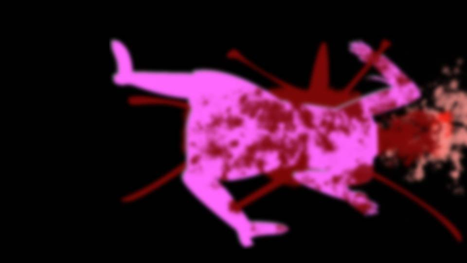
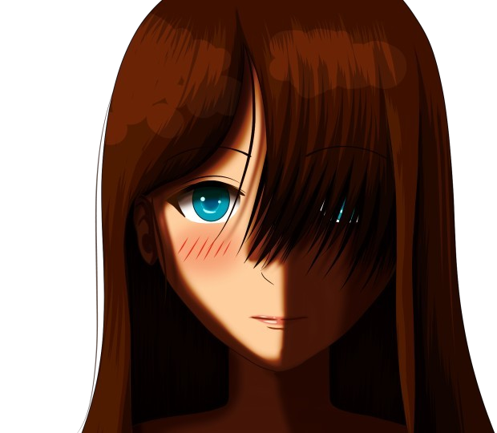
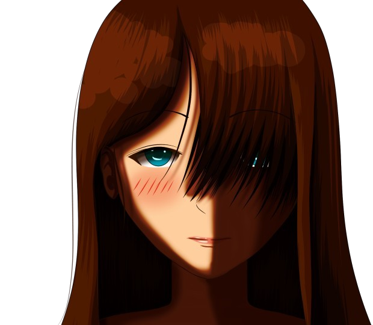
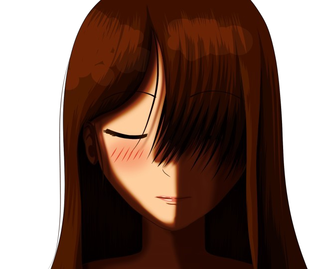

Script 0000246E

―I attended the thirteenth-year memorial service, as planned.
I could not see the residents' expressions, so I could not tell what they were thinking.
After this, everything will be decided.
Everything...
I could not see the residents' expressions, so I could not tell what they were thinking.
After this, everything will be decided.
Everything...

When the thirteenth-year memorial service was over, everyone left the meeting hall at once.
At an ordinary memorial service, no one would go home right away like this.
People would stretch out legs tired from kneeling and talk in whispers, and the mood would be a little more relaxed.
But today is different.
What everyone means to do, leaving here so quickly―
At an ordinary memorial service, no one would go home right away like this.
People would stretch out legs tired from kneeling and talk in whispers, and the mood would be a little more relaxed.
But today is different.
What everyone means to do, leaving here so quickly―
I know.

Everyone will surely head for the settlement's exit, that is, the Arata mountain road.
Then they will use Droga and capture Natsumi-chan.
Normally, surrounding the Niimura main house would be the better move.
But in that circular notice I wrote 'lie in wait on the Arata mountain road.'
Then they will use Droga and capture Natsumi-chan.
Normally, surrounding the Niimura main house would be the better move.
But in that circular notice I wrote 'lie in wait on the Arata mountain road.'
That is because Shirozaki-san is here.
Shirozaki-san handed Natsumi-chan the cherry branch.
So he should end up on the side protecting Natsumi-chan.
He will probably find some way to warn of the danger in advance.
Shirozaki-san handed Natsumi-chan the cherry branch.
So he should end up on the side protecting Natsumi-chan.
He will probably find some way to warn of the danger in advance.
Then Natsumi-chan and the others are bound to try to escape from here at once.
Unless they are Chigaya or Kana, they will travel by car, which means by the Arata mountain road.
Unless they are Chigaya or Kana, they will travel by car, which means by the Arata mountain road.

Just then, I saw Mifuyu-chan's car pull out of the Niimura main house toward the Arata mountain road.
Good. Just as I expected, it seems Natsumi-chan and the others are trying to escape by car.
Good. Just as I expected, it seems Natsumi-chan and the others are trying to escape by car.


"I'm home."
"Kotaro! Where have you been all this time!?"
"Huh? I went to lay flowers for Sakura... Wait, did something happen?"
"It seems everyone's about to attack Natsumi-chan."
"Huh!?"
"Kotaro! Where have you been all this time!?"
"Huh? I went to lay flowers for Sakura... Wait, did something happen?"
"It seems everyone's about to attack Natsumi-chan."
"Huh!?"
"But Kotaro, I'm relieved. You weren't part of the attack."
"O-of course not! What should we do...!"
"You'd be no use even if you went. Chigaya and Kana are guarding them."
"R-right... If those two are with them... But will Chigaya and the others be all right..."
"Well, all we can do is trust them."
"O-of course not! What should we do...!"
"You'd be no use even if you went. Chigaya and Kana are guarding them."
"R-right... If those two are with them... But will Chigaya and the others be all right..."
"Well, all we can do is trust them."
So my daughters are with them too.
Even I have no intention of forcing this plan through at the cost of sacrificing my daughters.
Can the two of them really stay unharmed against everyone on Droga?
Even I have no intention of forcing this plan through at the cost of sacrificing my daughters.
Can the two of them really stay unharmed against everyone on Droga?
But however much I worry, everyone is already on the move.
Trusting that Chigaya and Kana will come through safe, I should make my next move.
Trusting that Chigaya and Kana will come through safe, I should make my next move.
"Damn it! I'm going too!"
"Kotaro! Wait!"
I ignored Mom trying to stop me and dashed out of the house.
"Kotaro! Wait!"
I ignored Mom trying to stop me and dashed out of the house.
I headed for the Arata mountain road.
But at the right moment, I mean to stop and head back toward Sakura.
I do not know whether Sakura has a grasp of this situation, but to be ready for when Natsumi-chan is caught, back to Sakura once more―
But at the right moment, I mean to stop and head back toward Sakura.
I do not know whether Sakura has a grasp of this situation, but to be ready for when Natsumi-chan is caught, back to Sakura once more―
"............!"

Someone was standing there.
Wearing neither red robes nor a Noh mask, and not taking part in capturing Natsumi-chan either.
There is only one person like that.
Wearing neither red robes nor a Noh mask, and not taking part in capturing Natsumi-chan either.
There is only one person like that.

"Shirozaki-san..."
"Kotaro-kun, do you know where everyone's gone?"
This feeling―Shirozaki-san is waiting for me to slip up.
"Kotaro-kun, do you know where everyone's gone?"
This feeling―Shirozaki-san is waiting for me to slip up.
"It seems everyone's trying to catch Natsumi-chan!"
"I see. So the circular notice reached your place too."
"The circular notice...?"
"Oh? You don't know? This morning a circular came around saying to capture Natsumi-chan, though."
"I see. So the circular notice reached your place too."
"The circular notice...?"
"Oh? You don't know? This morning a circular came around saying to capture Natsumi-chan, though."
"No, at least I haven't..."
"Hmm... That circular said 'pass it to the house to the south.' The only house north of mine is the Niimura main house. Which means whoever made the circular delivered it to my house first."
"You're right. Well, all I'm saying is that I, at least, haven't seen it. Someone else in the Niimura household may have."
"Hmm... That circular said 'pass it to the house to the south.' The only house north of mine is the Niimura main house. Which means whoever made the circular delivered it to my house first."
"You're right. Well, all I'm saying is that I, at least, haven't seen it. Someone else in the Niimura household may have."
"Hm? So you're saying Grand Witch-sama or Chigaya-chan passed it to my house?"
"Surely not. Those two would never do something like that."
"Then Kana-chan, maybe? She saw it, didn't get what it meant, and left it at my place."
"I really doubt that..."
"Probably not."
"Surely not. Those two would never do something like that."
"Then Kana-chan, maybe? She saw it, didn't get what it meant, and left it at my place."
"I really doubt that..."
"Probably not."
"In that case, it was you who made the circular after all?"
"Well, I can't blame you for thinking so. But please remember. Until now I was suspected as the curse-killing culprit, and even watched in the meeting hall. And yet the curse-killing happened. Don't you think this time is similar?"
"Well, I can't blame you for thinking so. But please remember. Until now I was suspected as the curse-killing culprit, and even watched in the meeting hall. And yet the curse-killing happened. Don't you think this time is similar?"
"So you're claiming innocence."
"Of course. But Shirozaki-san, you're quite brave. You knew about the circular notice and didn't join the capture. If the capture succeeds, you'll be ostracized by the whole village, you know?"
"I expect so."
"Is that all right with you? Like that..."
"Of course. But Shirozaki-san, you're quite brave. You knew about the circular notice and didn't join the capture. If the capture succeeds, you'll be ostracized by the whole village, you know?"
"I expect so."
"Is that all right with you? Like that..."
"Natsumi-chan, a witch? Ridiculous.
First they watch Kotaro-kun over the murders, next it's Sakura-chan's curse?
And now a high school girl from Motoki-cho is the culprit?
The guesses keep changing and nothing gets solved. It's too absurd.
Is this settlement nothing but fools?"
"That's how hard a case it is."
"That's how hard a case it is."
"When I was watching you, I said something, didn't I?
That for you to be innocent, a curse-killing had to happen while you were under watch.
In other words, you proved your innocence with a resident's life."
"Well... if you put it that way, there's nothing more I can say, but..."
"Well... if you put it that way, there's nothing more I can say, but..."
"If someone other than you had proposed the watch, I'd understand.
But the one who said to watch you was you yourself. That sticks with me, no matter what.
You know the real culprit, don't you?"
"Please don't joke about that..."
"Please don't joke about that..."
"Then tell me about last night, in detail."
"Last night?"
"You said it, didn't you? That you'd tell me the truth of the curse-killing case. On my way back from bringing Natsumi-chan the cherry branch."
"Last night?"
"You said it, didn't you? That you'd tell me the truth of the curse-killing case. On my way back from bringing Natsumi-chan the cherry branch."
What is he talking about?
Yesterday I went in the buggy to pick up the Motoki-cho group at the landslide.
Shirozaki-san came along with me then, but I have not seen him since.
Is he trying to bait me?
No, if there is one possibility...
Yesterday I went in the buggy to pick up the Motoki-cho group at the landslide.
Shirozaki-san came along with me then, but I have not seen him since.
Is he trying to bait me?
No, if there is one possibility...
It is Eiichiro.
The dead Eiichiro posed as me and approached Shirozaki-san.
Most likely Shigatsu Youka saw Shirozaki-san as a danger and tried to win him over.
But Shirozaki-san must have grown suspicious for some reason and refused.
If I say here that I "don't know" about last night, he will know that a dead man is up and about.
The dead Eiichiro posed as me and approached Shirozaki-san.
Most likely Shigatsu Youka saw Shirozaki-san as a danger and tried to win him over.
But Shirozaki-san must have grown suspicious for some reason and refused.
If I say here that I "don't know" about last night, he will know that a dead man is up and about.
"That's right... I did say that. That I'd tell you the truth."
"Then tell me one more thing. Why did you say a curse-killing would happen today?"
"That was..."
Eiichiro, what on earth did you say...!
"Then tell me one more thing. Why did you say a curse-killing would happen today?"
"That was..."
Eiichiro, what on earth did you say...!
"That was... I'm sorry, I only said it out of a misunderstanding of my own.
So I still don't clearly know why a curse-killing would happen today..."
"A very convenient misunderstanding. But since you said you'd tell the truth, misunderstanding or not, I'd like to hear your reasoning."
"A very convenient misunderstanding. But since you said you'd tell the truth, misunderstanding or not, I'd like to hear your reasoning."
How much should I tell him?
Even by mistake, I cannot say that Sakura and Eiichiro are walking around.
If that got out, it really would be the end of this settlement.
The existence of Shigatsu Youka must be hidden at all costs.
Even by mistake, I cannot say that Sakura and Eiichiro are walking around.
If that got out, it really would be the end of this settlement.
The existence of Shigatsu Youka must be hidden at all costs.
"Ah, right. And there's one more thing I want to confirm."
"............"
"I'd like you to repeat what I talked about with you last night. Half-remembered is fine. Just roughly what the conversation was like."
"What do you mean by..."
"............"
"I'd like you to repeat what I talked about with you last night. Half-remembered is fine. Just roughly what the conversation was like."
"What do you mean by..."
"I want to confirm whether the you of last night was really you."
............!!
Don't tell me Shirozaki-san suspects that Eiichiro exists!?
What could he be basing that on...!
No, I should stay calm here and feel him out.
............!!
Don't tell me Shirozaki-san suspects that Eiichiro exists!?
What could he be basing that on...!
No, I should stay calm here and feel him out.
"Hahaha, that's an interesting thing to say.
You mean someone was impersonating me?
Don't tell me Mom was doing an impression of me."
"I'm serious."
"But... who else could even do something like that..."
"I'm serious."
"But... who else could even do something like that..."
"There is one, isn't there. Just one."
Cold sweat trickled down from my forehead.
At breakfast Goto-chan grilled me, and now Shirozaki-san.
This situation is stacked far too heavily against me.
If Goto-chan were to hear what Shirozaki-san is saying...
Cold sweat trickled down from my forehead.
At breakfast Goto-chan grilled me, and now Shirozaki-san.
This situation is stacked far too heavily against me.
If Goto-chan were to hear what Shirozaki-san is saying...
Is Shigatsu Youka not watching this situation right now?
Apparently it cannot grasp the senses of someone without danger sense, so unless a corpse hears our conversation directly, no information reaches Shigatsu Youka.
Apparently it cannot grasp the senses of someone without danger sense, so unless a corpse hears our conversation directly, no information reaches Shigatsu Youka.
No, Shigatsu Youka thinks of the residents here as a nuisance.
So it probably thinks it would be better if they wiped each other out and disappeared.
If it puts the corpses to work, the state may grow suspicious of the situation and start moving in a big way.
That is why Sakura and the others do not act directly.
They move only for the curse-killing, once a year.
So it probably thinks it would be better if they wiped each other out and disappeared.
If it puts the corpses to work, the state may grow suspicious of the situation and start moving in a big way.
That is why Sakura and the others do not act directly.
They move only for the curse-killing, once a year.
Should I take it... that I no longer have a single ally?
"I-I really don't know anything!
You're not saying the one you met yesterday was Eiichiro, are you!?"
"Of course it's not a believable story. But if it were so, wouldn't the truth of the curse-killing case come into view? It's a settlement with a strange power called danger sense to begin with. A walking corpse or two..."
"Of course it's not a believable story. But if it were so, wouldn't the truth of the curse-killing case come into view? It's a settlement with a strange power called danger sense to begin with. A walking corpse or two..."
"Shirozaki-san, now that really is absurd!"
"Yeah, I think so myself."
"............"
"............"
"Yeah, I think so myself."
"............"
"............"
Here we both fell silent.
And with the silence, a staring match began.
Shirozaki-san was waiting for me to crack.
I was waiting for Shirozaki-san to give up.
Talking with Shirozaki-san any further is dangerous.
And with the silence, a staring match began.
Shirozaki-san was waiting for me to crack.
I was waiting for Shirozaki-san to give up.
Talking with Shirozaki-san any further is dangerous.
"Fine, that's enough. You don't intend to say anything more, then."
"............"
"I'm calling the police."
"The police...!?"
"............"
"I'm calling the police."
"The police...!?"
"State-owned land or not, there was a murder. Not calling the police is strange to begin with.
No, precisely because it's state-owned land, we need the state to come in."
"But Mom is...!"
"Grand Witch-sama's the same. Why has she never called the police until this very moment? I understand not wanting to hand one of the settlement over to the police, sure. But... is that all?"
"But Mom is...!"
"Grand Witch-sama's the same. Why has she never called the police until this very moment? I understand not wanting to hand one of the settlement over to the police, sure. But... is that all?"
"What do you mean?"
"Maybe Grand Witch-sama knows something too."
"............"
Mom knows something?
Of course I have said nothing about Sakura, not even to Mom.
"Maybe Grand Witch-sama knows something too."
"............"
Mom knows something?
Of course I have said nothing about Sakura, not even to Mom.
No, there is something to what Shirozaki-san just said.
Indeed, it is baffling that Mom has never called the police until now.
She said she did not want to turn in anyone from the settlement, and yet this time she called in the Motoki-cho kids, who are outsiders.
So... that is what this means.
Indeed, it is baffling that Mom has never called the police until now.
She said she did not want to turn in anyone from the settlement, and yet this time she called in the Motoki-cho kids, who are outsiders.
So... that is what this means.


Mom knows the culprit who killed Sakura, no, the one who cut off Sakura's head.
That is someone Mom does not want to hand over to the police, in other words, family.
The family members alive back then were me, Chigaya, and Kana.
Chigaya aside, Kana, who was zero at the time, could not possibly have done such a thing.
That is someone Mom does not want to hand over to the police, in other words, family.
The family members alive back then were me, Chigaya, and Kana.
Chigaya aside, Kana, who was zero at the time, could not possibly have done such a thing.
Mom must think that I cut off Sakura's head.
But I have no memory of doing any such thing.
So in this situation, if there is one possibility...
But I have no memory of doing any such thing.
So in this situation, if there is one possibility...
it was Eiichiro who did it.
Eiichiro cut off Sakura's head, and posing as me, made contact with Mom.
Eiichiro cut off Sakura's head, and posing as me, made contact with Mom.
"Shirozaki-san, you really had better not call the police.
If Eiichiro is up and about, this isn't a case the police can handle."
"I know that. I call the police so that everyone understands something is happening that the police can't handle."
"I know that. I call the police so that everyone understands something is happening that the police can't handle."
"But this isn't the time for that, is it?
Natsumi-chan and the others may be under attack by everyone right now."
"Right. All the more reason to call them, then. Even if I call now, it'll be an hour before they arrive."
"Right. All the more reason to call them, then. Even if I call now, it'll be an hour before they arrive."
With that, Shirozaki-san headed toward his own house.
"Kotaro-kun, I'll call the police and watch how things go from home.
If everyone's using Droga, my coming out would be no use."
"............"
"Do you think it cowardly, holing up at home?"
"No..."
"I think it's cowardly myself... But..."
"............"
"Do you think it cowardly, holing up at home?"
"No..."
"I think it's cowardly myself... But..."

"But Kotaro-kun, someone has to survive.
Someone among those trying to protect Natsumi-chan and the others.
Otherwise there'll be no one left to tell what happened here."
"So you mean you can't trust me or Mom, since we're still in the settlement?"
"So you mean you can't trust me or Mom, since we're still in the settlement?"
"That's right. As I said, you and Grand Witch-sama are both hiding something.
I'm sorry, but I can no longer trust anyone of this settlement unconditionally.
Ironically, Natsumi-chan and her friends are more trustworthy than this settlement's own people.
Or else..."
"Or else, will you kill me here and now?"
"............"
"Kill me now, and the police won't come right away. No one will be left to suspect you and your mother. Nine years ago, Yuriko was killed just as she was about to call the police, mind you."
"Are you trying to provoke me like that?"
"............"
"............"
"Kill me now, and the police won't come right away. No one will be left to suspect you and your mother. Nine years ago, Yuriko was killed just as she was about to call the police, mind you."
"Are you trying to provoke me like that?"
"............"
"No, I have no intention of doing anything to you, Shirozaki-san.
If I'm innocent, there's no point in killing you.
Supposing Eiichiro cut off Sakura's head and Mom kept quiet, that surely isn't something today's law can judge."
"I see. You don't mean to stop me."
"Yes."
"I see. You don't mean to stop me."
"Yes."
"All right.
So long, Kotaro-kun. We may never meet again.
Take care of yourself."
With those words, Shirozaki-san went into his house.
By rights, I should kill Shirozaki-san right now.
But I am no match for the strength of Shirozaki-san, who does smithing every day, and Shirozaki-san's house has a hunting rifle too.
So the only move I have is to use Droga here.
But I am no match for the strength of Shirozaki-san, who does smithing every day, and Shirozaki-san's house has a hunting rifle too.
So the only move I have is to use Droga here.
But I must not rush.
Droga puts a heavy strain on the body, and on top of that its effect lasts only about 10 minutes.
It even causes infection through spores.
So what I should do now is...
Droga puts a heavy strain on the body, and on top of that its effect lasts only about 10 minutes.
It even causes infection through spores.
So what I should do now is...
I went to Sakura.
There is no time left.
Sakura or Eiichiro, either will do. I will have them kill everyone outside the family.
This situation is beyond my control now.
There is no time left.
Sakura or Eiichiro, either will do. I will have them kill everyone outside the family.
This situation is beyond my control now.

"Sakura! Are you there!? Sakura!"
Holding down my ragged breath, I called Sakura's name.
Holding down my ragged breath, I called Sakura's name.

"Kotaro...

You botched it after all."
"N-no, it's not that...!"
"The residents all went after Natsumi-chan and the others with everything they had, you know?"
"Don't tell me, they killed―"
"N-no, it's not that...!"
"The residents all went after Natsumi-chan and the others with everything they had, you know?"
"Don't tell me, they killed―"
"But Chigaya and Kana really are fine warriors of Arata. Everyone seems unhurt, you know?"
"I see... But Natsumi-chan―"
"I see... But Natsumi-chan―"

"It couldn't be helped, so I lent a hand.
I cut down a tree to block the road, and let out just a tiny bit of spores to make her foresee.
Now they have no choice but to come back to the settlement, right?"
"You did... Then... Then hurry and deal with everyone outside the family! Especially Shirozaki-san!"
"You did... Then... Then hurry and deal with everyone outside the family! Especially Shirozaki-san!"
"Shirozaki-san? What on earth did you talk about?"
"He says he'll call the police here, and he's caught on that Eiichiro is up and about! We can't leave Shirozaki-san alive any...!"
"He says he'll call the police here, and he's caught on that Eiichiro is up and about! We can't leave Shirozaki-san alive any...!"
"Haah... Honestly, Kotaro, you're bad at this kind of thing.
You're so good at working out a plan slowly, but you can't improvise, or..."
"S-sorry..."
"S-sorry..."
"Well, fine. But we won't kill Shirozaki-san."
"Why..."
"Why..."
"Natsumi-chan and the others are headed this way. So, Kotaro, you lead Natsumi-chan here.
And once Natsumi-chan chooses to become one with us, there'll be nothing to fear, whatever comes."
"Nothing to fear, whatever comes...
What are you planning?"
"With this, the Goddess will have no more weakness.
After that, all that's left is to openly absorb Arata's nourishment and flourish."
"You mean to destroy the settlement!?"
"You mean to destroy the settlement!?"
"That's right?"
"Sakura, wait, please! This settlement has lasted for hundreds of years―"
"That settlement is a wreck now. Kotaro, you're part of the reason too, you know?"
"Ugh...!"
"That settlement is a wreck now. Kotaro, you're part of the reason too, you know?"
"Ugh...!"
"Besides, Kotaro, you have nothing to worry about.
You'll be with me from now on, always."
"What do you mean...?"
"Me, Eiichiro, and Natsumi-chan. That makes three divine messengers. One more― all we need is a living first generation."
"So it's... me, as a divine messenger..."
"Me, Eiichiro, and Natsumi-chan. That makes three divine messengers. One more― all we need is a living first generation."
"So it's... me, as a divine messenger..."
"Oh my, wasn't that your intention from the start?
If you don't want to, that's fine, you know? I just have to egg on some other resident who used Droga."
This is no longer... the Sakura I know.
I knew... I knew it was Shigatsu Youka's trap...
I knew the day would come when it would end like this...
I only... I only wanted to be with Sakura...
I knew... I knew it was Shigatsu Youka's trap...
I knew the day would come when it would end like this...
I only... I only wanted to be with Sakura...
"Now, Kotaro, Natsumi-chan and the others will be here soon, you know? Hurry and lead everyone here."
"By 'everyone,' you mean...?"
"Haruka or anyone will do. Natsumi-chan's precious person gets their life spared, and in exchange, we have Natsumi-chan become a divine messenger. Simple, isn't it?"
"By 'everyone,' you mean...?"
"Haruka or anyone will do. Natsumi-chan's precious person gets their life spared, and in exchange, we have Natsumi-chan become a divine messenger. Simple, isn't it?"
I am no longer even allowed to act on my own will.
I can only do as Sakura―no, as Shigatsu Youka says.
Resisting here would mean nothing at all.
One faint hope: I become a divine messenger, and with Sakura, forever...
I can only do as Sakura―no, as Shigatsu Youka says.
Resisting here would mean nothing at all.
One faint hope: I become a divine messenger, and with Sakura, forever...
Now I have no choice but to cling to a hope as illusory as that.
I know that myself.
I am a fool. A clown out of a comic monologue.
All I can do is curse my own foolishness.
I know that myself.
I am a fool. A clown out of a comic monologue.
All I can do is curse my own foolishness.

―When I went outside,

Mom was standing outside the cave.
"Kotaro, why are you here?"
"In case everyone comes back. Here we can hide them all, right?"
"That's right, like with Chigaya..."
"In case everyone comes back. Here we can hide them all, right?"
"That's right, like with Chigaya..."
Chigaya was locked up here 10 years ago, in the grip of that murderous urge.
This secret base is also a hiding place for emergencies.
This secret base is also a hiding place for emergencies.
"Kotaro, deep down underground there should be a hidden passage leading to Mount Itohime.
If it comes to it, get everyone out through there."
"Deeper in...? Got it. When everyone arrives I'll take them deeper in for now, and if it still gets dangerous, we flee into the hidden passage, right?"
"But it caves in easily, so be careful, you hear?"
"Yeah..."
"Deeper in...? Got it. When everyone arrives I'll take them deeper in for now, and if it still gets dangerous, we flee into the hidden passage, right?"
"But it caves in easily, so be careful, you hear?"
"Yeah..."
At the same time, I recalled what Shirozaki-san had said.
The culprit who cut off Sakura's head 10 years ago―that may be Eiichiro.
And could it be that Mom saw it happen and has confused me with Eiichiro?
Since it has come to this, maybe I should find out.
The culprit who cut off Sakura's head 10 years ago―that may be Eiichiro.
And could it be that Mom saw it happen and has confused me with Eiichiro?
Since it has come to this, maybe I should find out.
"Hey, Mom..."
"Hm?"
"Ten years ago... Sakura's head being cut off, do you remember that?"
"No, I don't know about that."
Not "I don't remember" or "I forgot." "I don't know."
A slightly odd way to put it.
"Hm?"
"Ten years ago... Sakura's head being cut off, do you remember that?"
"No, I don't know about that."
Not "I don't remember" or "I forgot." "I don't know."
A slightly odd way to put it.
Is Mom pretending she never saw the scene, or does she truly not know―
that is, was it not Eiichiro who cut it?
Checking this now will not lead to anything constructive.
It is only that I want to know.
Checking this now will not lead to anything constructive.
It is only that I want to know.
"Mom, you remember, don't you? That I cut off Sakura's head."
"............"
"That's why you never called the police until now, isn't it, Mom?"
"I don't know."
"You kept quiet all this time to protect me, didn't you? Even now..."
"............"
"That's why you never called the police until now, isn't it, Mom?"
"I don't know."
"You kept quiet all this time to protect me, didn't you? Even now..."
"Kotaro...
You... could it be you've realized?"
"Huh?"
"Who really cut off the head."
"Mom..."
"Huh?"
"Who really cut off the head."
"Mom..."
"At the time, you said this, clear as day:
'I pushed Sakura off. If things stay like this I'll be suspected as the culprit, so I cut off her head.
That way it can be staged as a baffling murder.'"
"............"
"You don't remember that?"
"No, this is the first I've heard of it."
"I see... Haah... So that's it after all..."
"............"
"You don't remember that?"
"No, this is the first I've heard of it."
"I see... Haah... So that's it after all..."
"Eiichiro, then..."
"Probably. Kotaro, have you seen Sakura?"
"Yeah. I just saw her, in fact."
"I see... So that's how it is... So, what will you do now?"
"Probably. Kotaro, have you seen Sakura?"
"Yeah. I just saw her, in fact."
"I see... So that's how it is... So, what will you do now?"
"............"
"You mean to sacrifice this settlement?"
"It's already... too late..."
"You mean to sacrifice this settlement?"
"It's already... too late..."
Something bursts against my cheek.
It was something that happened now and then when I was a boy.
When I did something bad, played a prank, or told a lie―
Mom would slap me like this.
A mother scolding her child, whether with words or with a hand, does not change however old he gets.
It was something that happened now and then when I was a boy.
When I did something bad, played a prank, or told a lie―
Mom would slap me like this.
A mother scolding her child, whether with words or with a hand, does not change however old he gets.
"Kotaro, of course I bear responsibility too.
I say this knowing that: are you truly all right with this?"
"............"
"............"
"What's done can't be undone.
If there is real remorse there, I don't intend to blame you further.
But if you're giving up on what comes next, I can't keep quiet either."
"How many have died because of you and me?
And what is happening today? Is this what you wanted?"
"No... I was deceived by Sakura... by those things..."
"No... I was deceived by Sakura... by those things..."
My cheek bursts once more.
Mom's palm was strong enough to make me forget her age.
A full-strength slap, with nothing held back.
Mom's palm was strong enough to make me forget her age.
A full-strength slap, with nothing held back.
"What is this spineless talk!
Are you going to just keep taking it like this!?"
"Mom..."
"Mom..."
"Doesn't it gall you!?
Don't you feel pathetic, dancing to the tune of Sakura's shape!?
It galls me! I'd meant not to talk for Kotaro's sake, but I'm no different from you!"
"I'll protect Natsumi-chan and the others with my life. This settlement too."

Mom gripped the nata she had leaned against the rock wall.
It was the first time I had seen Mom hold a weapon outside a ritual.
It was the first time I had seen Mom hold a weapon outside a ritual.
"Kotaro, you are my son. So I want you to stay well, always.
But listen: if you're a man of Arata, settle the score.
Even if it costs your life."
Just then, a cloud of dust came into view from the far side of the settlement.
It looked like Mifuyu-chan's car was heading this way.
Just then, a cloud of dust came into view from the far side of the settlement.
It looked like Mifuyu-chan's car was heading this way.
"Now, Kotaro. This is the moment of truth.
One for all, all for one."